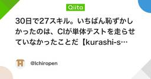
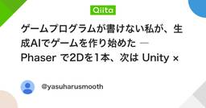
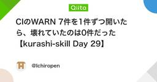
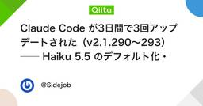
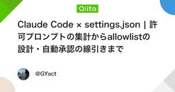
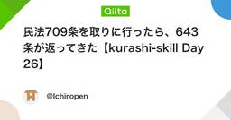
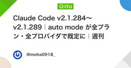
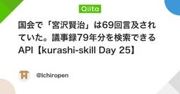
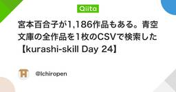

生成AIタグが付けられた新着記事 - Qiita
生成AI（Generative AI）は、新しいデータやコンテンツ（テキスト、画像、音声、動画、コードなど）を生成する能力を持つAIの一種 です。従来のAIが主にデータの分析や分類、パターン認識（例：これは犬の画像である、スパムメールである）を得意としていたのに対し、生成AIは学習したデータの特徴をもとに、まだ存在しない新しいコンテンツを生み出すことができます。まるで人間がアイデアを出し、作品を作るかのように、生成AIが創造的な出力を生み出す点が大きな特徴です（ただし、これは統計的処理に基づいたものであり、本質的な「創造性」や「意図」を持つわけではありません）。生成AIの代表的なモデル・技術生成AIは、さまざまな技術の発展によって実現されています。代表的なものを以下に紹介します。大規模言語モデル（LLM: Large Language Models）大量のテキストデータで学習し、人間のように自然な文章を生成するモデルです。質問応答、要約、翻訳、ストーリー作成、プログラムのコード生成など、幅広い応用が可能です。代表例OpenAIのGPTシリーズ（ChatGPTの基盤）GoogleのGeminiAnthropicのClaude など拡散モデル（Diffusion Models）ノイズを加えた画像から段階的に元の画像を復元する手法を利用して、高品質な画像を生成します。現在では、テキストから写実的な画像やアート作品を生成する技術として主流になっています。代表例MidjourneyStable DiffusionDALL·E（OpenAI）など音楽生成AIテキストや簡単な指示から、メロディやリズム、ハーモニー、さらにはボーカルを含む楽曲を生成します。作曲支援やBGM制作などに活用が進んでいます。代表例Suno AIGoogleのMusicLM など動画生成AIテキストや画像、短いプロンプトから、映像（動画）を生成する技術です。映画、広告、ゲーム、教育など幅広い分野で注目されています。代表例OpenAIのSoraRunway MLPika Labs など生成AIの利点・可能性生成AIは多様な分野でその可能性を広げており、以下のような利点があります。コンテンツ制作の効率化ブログ記事、広告コピー、イラスト、音楽などを短時間で大量に生成でき、制作作業の効率が大幅に向上します。パーソナライズの進化ユーザーの嗜好や行動履歴に応じて、より個別化されたコンテンツやサービスを提供できます。創造性の拡張人間では思いつかないようなアイデアや表現を提示することで、クリエイターの発想を刺激し、創造活動を支援します。業務の自動化定型的な文書作成、データ入力、カスタマーサポートの応答など、反復的な業務を自動化し、生産性を向上させます。開発効率の向上コード補完や自動生成、バグ修正提案などにより、プログラミング作業を加速します。参考文献・関連リンクWikipedia: 生成AIGoogle AI Blog: Generative AIOpenAI Blog: Generative AI関連タグLLMAIChatGPTGemini
フィード






















